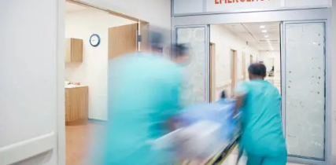
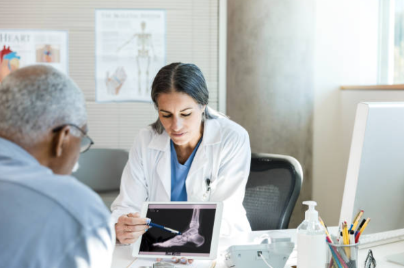
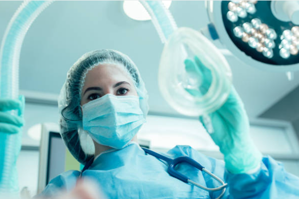
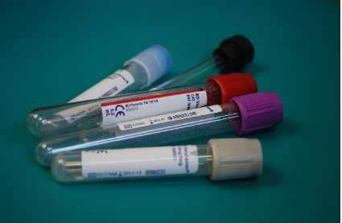
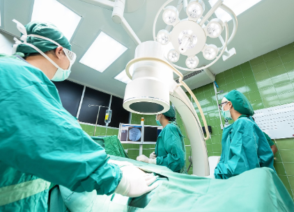

Advanced Medical Services With Compassionate & Patient-Focused Care
Sri Vinayaka Hospital, Vijayanagar has been serving families across Bengaluru for more than 25 years with trusted healthcare services, experienced doctors and affordable treatment solutions.
Our NABH-recognized healthcare approach combines modern medical facilities, accurate diagnostics, emergency support and personalized patient care under one roof. From routine consultations to surgical treatments and inpatient care, we are committed to delivering safe, transparent and compassionate healthcare experiences for every patient.
With advanced medical infrastructure, skilled specialists and dedicated staff support, Sri Vinayaka Hospital continues to be a reliable healthcare destination for individuals and families seeking quality treatment with trust and care.
Emergency & Critical Care Services
Sri Vinayaka Hospital provides immediate emergency medical care with experienced doctors, trained emergency staff and essential critical care facilities available round the clock.
Our emergency department is equipped to handle accidents, sudden illness, breathing difficulties, chest pain, trauma cases, high fever, infections and other urgent medical conditions with fast response and continuous patient monitoring.
With over 25+ years of trusted healthcare service in Bengaluru, we focus on delivering quick attention, safe treatment and compassionate emergency care when every second matters most.
- 24/7 emergency medical support
- Immediate doctor attention
- Trauma and accident care
- Emergency observation facilities
- Critical patient stabilization
- Experienced emergency healthcare team

General Medicine
Our General Medicine department provides comprehensive medical care for adults with accurate diagnosis, preventive healthcare support and effective treatment for a wide range of common and chronic illnesses.
With experienced doctors and patient-focused care, we help manage conditions such as fever, infections, diabetes, blood pressure, thyroid disorders, respiratory problems and other lifestyle-related health concerns.
At Sri Vinayaka Hospital, we focus on early diagnosis, continuous monitoring and personalized treatment plans to ensure better recovery, long-term wellness and improved quality of life for every patient.
- Fever and infection treatment
- Diabetes and BP management
- Thyroid and hormonal disorder care
- Routine health consultation
- Preventive health checkups
- Long-term lifestyle disease care
Gynecology & Women Care
Sri Vinayaka Hospital provides comprehensive gynecology and women’s healthcare services with compassionate medical support for women at every stage of life.
Our experienced gynecology specialists offer consultation, diagnosis, pregnancy care and treatment for a wide range of women’s health conditions in a safe, comfortable and supportive environment.
From routine health checkups and menstrual concerns to prenatal care, fertility guidance and preventive screening, we focus on personalized care, patient comfort and long-term wellness for every woman.
- Pregnancy and prenatal care
- Women wellness checkups
- Gynecological consultation
- Menstrual disorder treatment
- Routine screening and preventive care
- Fertility and reproductive health guidance
Pediatrics & Child Care
Our Pediatrics department provides specialized healthcare support for newborns, infants, children and adolescents with compassionate and family-focused medical care.
At Sri Vinayaka Hospital, we focus on early diagnosis, preventive care, growth monitoring and effective treatment for common childhood illnesses in a safe and child-friendly environment.
From routine consultations and nutrition guidance to newborn care and developmental support, our experienced pediatric team is committed to ensuring the healthy growth and well-being of every child.
- Child health consultation
- Newborn and infant care
- Growth and development monitoring
- Common childhood illness treatment
- Nutritional and wellness guidance
- Preventive pediatric healthcare support
Orthopedics
Sri Vinayaka Hospital provides advanced orthopedic care for bone, joint, muscle and spine-related conditions with experienced specialists and modern treatment support.
Our orthopedic department focuses on accurate diagnosis, pain relief, mobility improvement and recovery support for patients suffering from fractures, arthritis, sports injuries and chronic orthopedic problems.
From minor injuries to long-term orthopedic conditions, we aim to provide safe, personalized and effective treatment that helps patients regain comfort, movement and quality of life.
- Fracture and trauma care
- Joint pain and arthritis treatment
- Spine and back pain management
- Sports injury treatment
- Orthopedic consultation and evaluation
- Recovery and rehabilitation support

Cardiology
Sri Vinayaka Hospital provides comprehensive cardiac care services for the diagnosis, monitoring and management of heart-related conditions with experienced medical support and modern diagnostic facilities.
Our cardiology department focuses on preventive heart care, early detection and personalized treatment plans for patients experiencing chest pain, high blood pressure, heart disease and other cardiac concerns.
With advanced screening support and compassionate patient care, we help individuals maintain better heart health, reduce risk factors and improve long-term cardiovascular wellness.
- ECG and heart screening
- Blood pressure monitoring and care
- Cardiac consultation and evaluation
- Heart disease management support
- Preventive cardiac health checkups
- Lifestyle and heart wellness guidance
General Surgery
Sri Vinayaka Hospital offers safe, affordable and patient-focused general surgical care with experienced surgeons, modern operation facilities and complete pre- and post-surgery support.
Our surgical team manages a wide range of general surgical conditions with careful evaluation, accurate diagnosis and personalized treatment planning to ensure safer procedures and faster recovery.
With advanced operation theatre support, trained medical staff and continuous patient monitoring, we are committed to delivering trusted surgical care with comfort, transparency and compassionate attention at every stage of treatment.
- Minor and general surgeries
- Pre-surgery consultation and evaluation
- Post-surgery recovery care
- Safe surgical and operation theatre support
- Experienced surgical specialists
- Patient-focused treatment and monitoring

Physiotherapy
Sri Vinayaka Hospital provides professional physiotherapy and rehabilitation services focused on pain relief, mobility improvement and faster physical recovery through personalized treatment plans.
Our physiotherapy department supports patients recovering from surgery, injuries, joint problems, muscle pain, sports injuries and long-term orthopedic conditions with guided therapy and exercise-based treatment.
With experienced physiotherapists and patient-focused rehabilitation care, we help improve strength, flexibility, movement and overall physical well-being for individuals of all age groups.
- Post-surgery rehabilitation support
- Back, neck and joint pain therapy
- Sports injury rehabilitation
- Mobility and flexibility improvement
- Muscle strengthening exercises
- Personalized recovery-focused treatment
Diagnostics
Sri Vinayaka Hospital provides accurate and reliable diagnostic services with modern medical equipment and experienced healthcare professionals to support early detection and effective treatment planning.
Our diagnostic department offers comprehensive laboratory testing, ultrasound scanning, ECG, digital X-ray and preventive health screening services in a safe and patient-friendly environment.
With advanced technology and timely reporting, we help doctors and patients make informed healthcare decisions while ensuring accurate diagnosis and continuous medical support.
- Blood tests and laboratory services
- Digital X-ray facilities
- Ultrasound and scanning services
- ECG and cardiac screening
- Preventive health checkups
- Accurate and timely diagnostic reporting

Pharmacy
Sri Vinayaka Hospital provides round-the-clock pharmacy services with essential medicines, prescription support and healthcare products for patients and emergency medical needs.
Our in-house pharmacy ensures quick access to prescribed medicines, reliable medical supplies and continuous support for both outpatient and inpatient care with patient-friendly assistance.
With trusted pharmaceutical support and convenient medicine availability, we aim to make healthcare more accessible, safe and comfortable for patients and their families at all times.
- 24/7 medicine availability
- Prescription medicine support
- Healthcare and wellness products
- Emergency medicine assistance
- Patient-friendly pharmacy guidance
- Support for inpatient and outpatient care
ICU & Inpatient Care
Sri Vinayaka Hospital provides advanced ICU monitoring and inpatient care services with experienced doctors, trained nursing staff and continuous medical supervision for patients requiring specialized care.
Our inpatient facilities are designed to ensure patient comfort, safety and proper recovery support with well-maintained rooms, round-the-clock observation and compassionate healthcare assistance.
From critical care monitoring to post-treatment recovery, we focus on delivering safe, responsive and patient-centered medical care in a supportive hospital environment for patients and their families.
- Advanced ICU monitoring support
- Comfortable inpatient rooms
- 24/7 nursing and medical care
- Continuous doctor supervision
- Patient recovery and observation support
- Safe and compassionate inpatient care

Insurance Assistance Services
Sri Vinayaka Hospital provides insurance assistance and cashless hospitalization support for eligible treatments and surgical procedures.
Our team helps patients understand insurance documentation, approval procedures and treatment-related coverage with proper guidance and patient-friendly support.
We aim to make the treatment process smoother and more convenient by assisting patients and families throughout insurance coordination and hospital admission formalities.
- Cashless hospitalization support
- Insurance documentation guidance
- Support for eligible treatments
- Patient-friendly assistance process
- Hospital admission coordination
- Dedicated support for patients and families
Advanced Technologies & Facilities
Sri Vinayaka Hospital is equipped with advanced medical technologies, modern operation theatre support and updated diagnostic facilities for accurate treatment and better patient care.
Our healthcare infrastructure supports efficient diagnosis, patient monitoring, emergency care and surgical procedures with improved safety and treatment precision.
With continuous focus on updated healthcare systems and patient comfort, we aim to provide trusted and technology-supported medical services for individuals and families across Bengaluru.
- Modern diagnostic equipment
- Advanced operation theatre facilities
- Updated patient monitoring systems
- Technology-supported healthcare services
- Improved treatment accuracy and safety
- Efficient emergency and inpatient support
Book Appointment
Fill your details and our team will contact you shortly.
Hello!
Your appointment booking is confirmed. Our team will get back to you shortly.